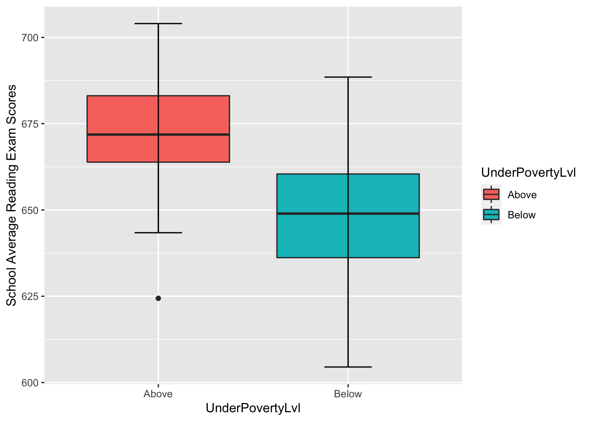
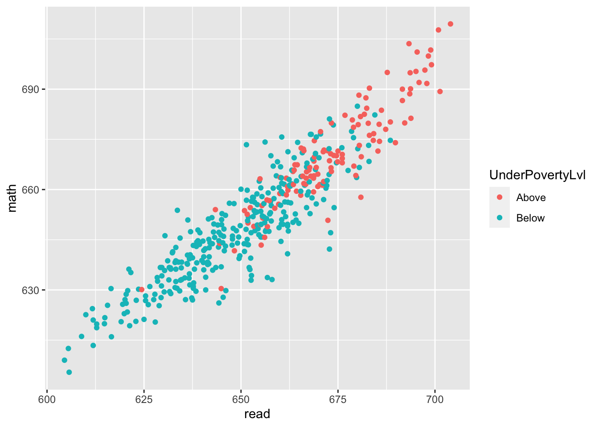
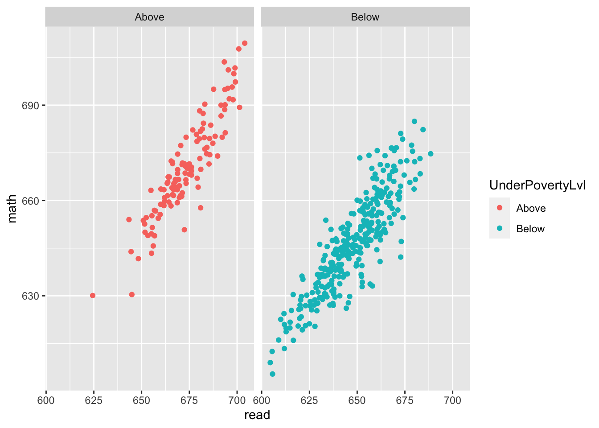

library(AER)
data("CASchools")
library(tidyverse)Assignment2_Q2
a. Create a new tibble called CASchools_A2_3 that adds a new column to the CASchools data.frame named UnderPovertyLvl which contains a factor variable where the level is equal to “Below” if the district average income is less than $16.5 K (the poverty level in the US in 1998 for a family of four) and “Above” if it is greater than or equal to $16.5K. Note: The variable units for income are 1000’s of US dollars.
CASchools_A2_3 <- as_tibble(CASchools) %>%
mutate(UnderPovertyLvl=factor(ifelse(income < 16.5, "Below", "Above")))
head(CASchools_A2_3)# A tibble: 6 × 15
district school county grades stude…¹ teach…² calwo…³ lunch compu…⁴ expen…⁵
<chr> <chr> <fct> <fct> <dbl> <dbl> <dbl> <dbl> <dbl> <dbl>
1 75119 Sunol Gl… Alame… KK-08 195 10.9 0.510 2.04 67 6385.
2 61499 Manzanit… Butte KK-08 240 11.1 15.4 47.9 101 5099.
3 61549 Thermali… Butte KK-08 1550 82.9 55.0 76.3 169 5502.
4 61457 Golden F… Butte KK-08 243 14 36.5 77.0 85 7102.
5 61523 Palermo … Butte KK-08 1335 71.5 33.1 78.4 171 5236.
6 62042 Burrel U… Fresno KK-08 137 6.40 12.3 87.0 25 5580.
# … with 5 more variables: income <dbl>, english <dbl>, read <dbl>, math <dbl>,
# UnderPovertyLvl <fct>, and abbreviated variable names ¹students, ²teachers,
# ³calworks, ⁴computer, ⁵expenditureb. Create a plot containing two boxplots showing the school average reading exam scores for the two groups of schools defined by the UnderPovertyLvl variable. Describe the distribution of each group’s boxplot separately and any differences you see in the two group distributions. How does what you see possibly relate to certain aspects of the histogram you made in part (b)?
ggplot(CASchools_A2_3, aes(x=UnderPovertyLvl, y=read, fill=UnderPovertyLvl)) +
geom_boxplot() +
ylab("School Average Reading Exam Scores") +
stat_boxplot(geom="errorbar", width=0.25)
For the above poverty portion, we can see that is has a medium around 670, its 25%-ile is around 663 and its 75%-ile is around 685. Almost all data is in between 640 to 710, however, there is one outlier much below 640, situated around 625.
For the below poverty portion, we can see that is has a medium around 650, its 25%-ile is around 637 and its 75%-ile is around 661. Almost all data is in between 610 to 683.
Overall, comparing the two with each other, we can see that people under the poverty level tend to have a less read score. And for each data measurement we took above, it is generally around 20-30 points less for people under poverty level. Another interesting thing is that even though people above poverty level tend to perform better on read score, there is one outlier that is significantly below the rest in the same group.
Compare this plot to the histogram we made before, it justifies why the histogram seems to have two central locations (one around 640 and one around 662), in this case, most likely due to this two groups separated by poverty levels. Beside this insight, the other properties do align with what we see before from the histogram.
c. Produce a scatterplot to show the association between the school average reading exam scores and the school average math exam scores where the points are colored by the level of the UnderPovertyLvl variable. Describe the type and strength of the association you see between the reading and math scores as well as whether you see difference in association between the two schools.
ggplot(CASchools_A2_3, aes(x=read, y=math, col=UnderPovertyLvl)) +
geom_point() 
From this plot, we can see a strong linear association between the read score and the math score for both poverty groups. Another thing is that students’ read and math score tend to be more or less about the same. People from the under poverty group tend to perform less well in both math and reading compared to people from the above poverty group.
d. Modify the code you used for part (c) to create two scatterplots (with each one in a different facet in the same figure), one for each group of ‘UnderPovertyLvl’ separately. Which figure (in part c or in part d) is better for comparing the two associations? Explain in a sentence or two.
ggplot(CASchools_A2_3, aes(x=read, y=math, col=UnderPovertyLvl)) +
geom_point() + facet_grid(~UnderPovertyLvl)
I think the plot from part d is better at comparing association between read and math score since unlike part c where all the data points for both poverty group overlaps with each other, having them separate eliminates distraction and allows us better visualize the string positive linear association. Based on what we see here, it does not differ much from the plot in part c. There is indeed a string linear association between the read and math score. Moreover, the slope for both graph looks pretty much the same as well.